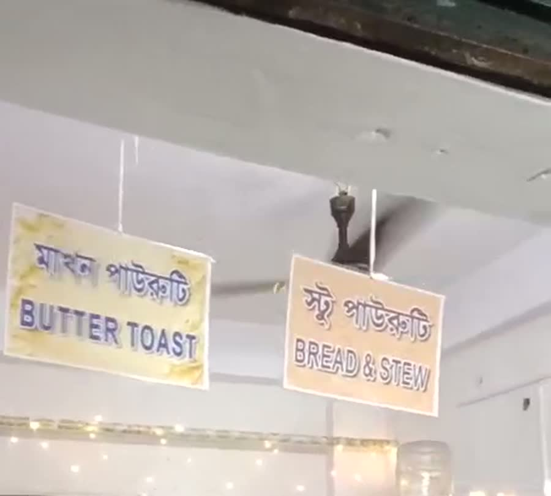
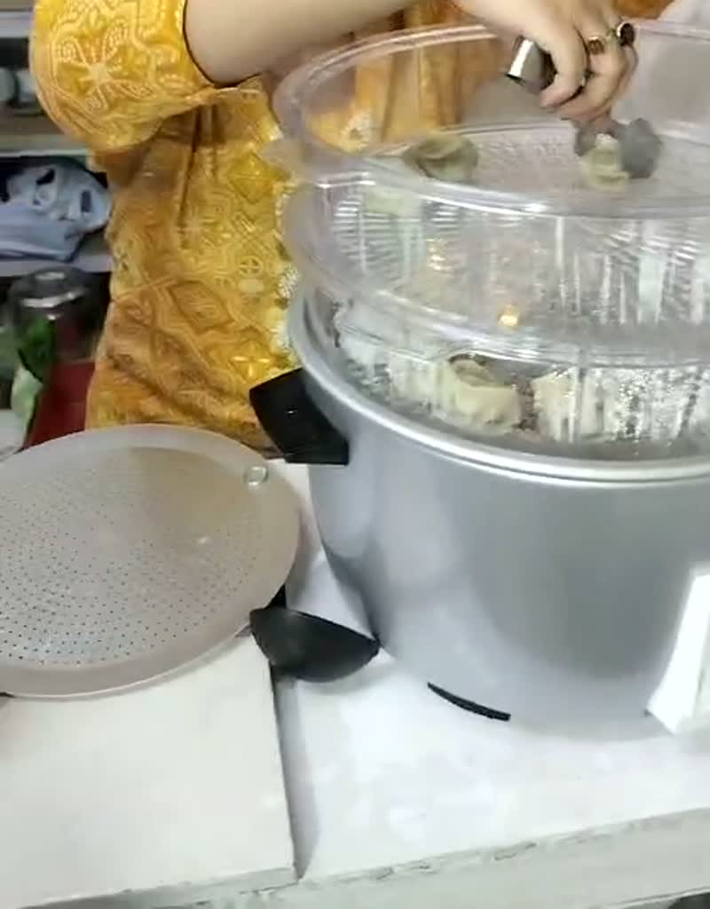
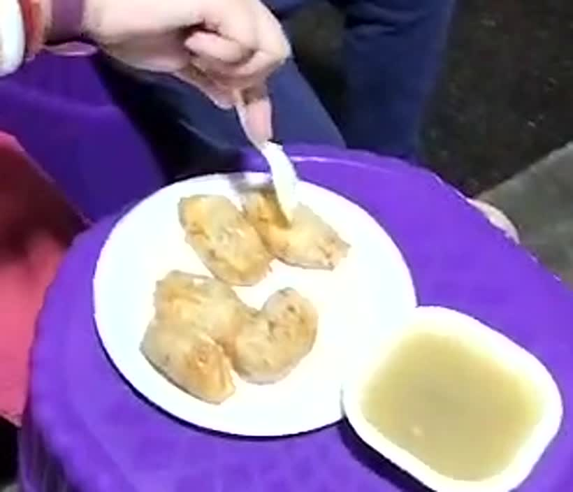
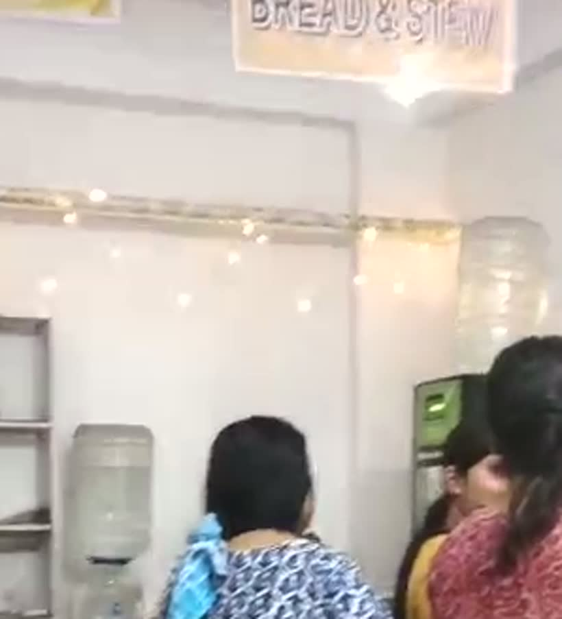
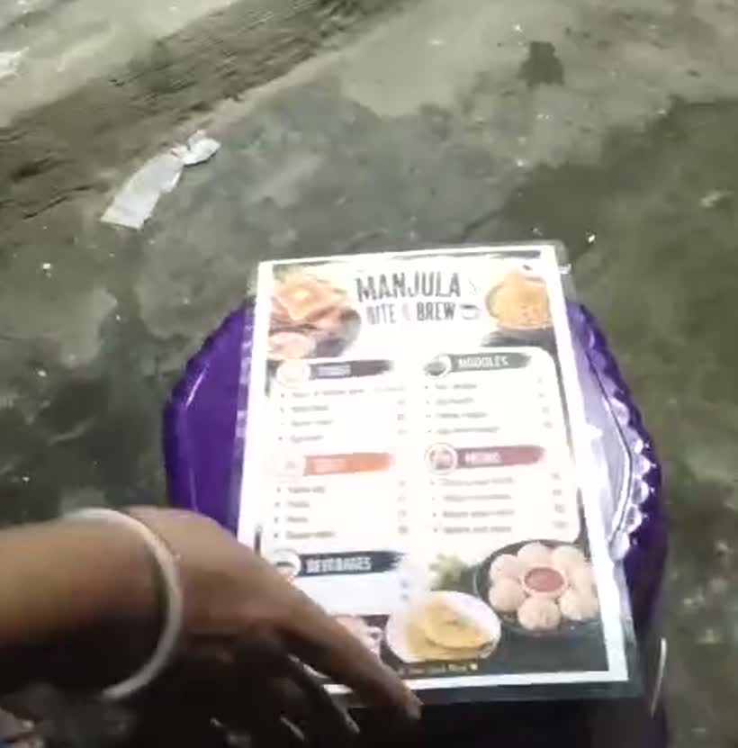
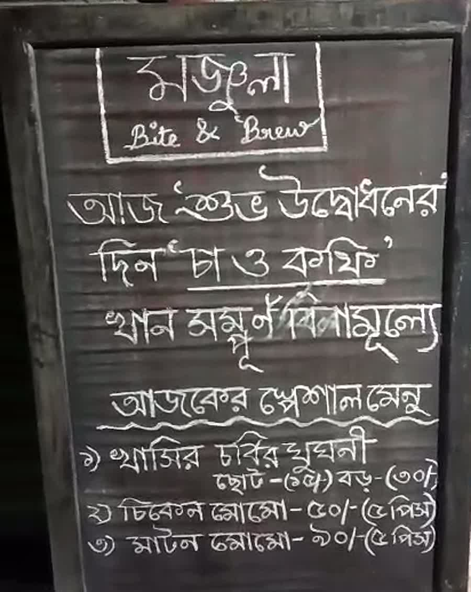

উত্তরপাড়া · ব্যানার্জি পাড়া স্ট্রিট Uttarpara · Banerjee Para Street
Manjula
Bite & Brew
উত্তরপাড়া গার্লস হাই স্কুলের গা ঘেঁষে, হাঁটা পথ। মোমো, স্টু পাউরুটি, ম্যাগি, ডিম, চা — যা যা লাগে, ঠিক ততটুকুই। বাইরে বেগুনি টুল, ভিতরে টুনি লাইট। আর ফুটপাথে একটা স্লেট — রোজ নতুন কিছু ওঠে তাতে।
A one-room shop a short walk from Uttarpara Girls High School. Momo, bread and stew, maggie, eggs and tea — what is wanted, and nothing beyond it. Purple stools on the pavement, fairy lights over the counter, and a slate by the door that says something different every day.
রোজ সকাল ৯টা — রাত ৯টা Every day, 9am to 9pm
ভিতরটাInside
এক ঘরের দোকান
One room, and a pavement
সাদা দেওয়াল, হাতে লেখা সাইনবোর্ড, কাচের বয়ামে বিস্কুট, আর একটা স্টিমার। ছবিগুলো এই দোকানেরই, এই মানুষগুলোরই — সাজানো কিছু নেই।
White walls, hand-lettered signs, biscuits in glass jars, one steamer. Every picture on this site is of this shop and these people. None of it is staged.





ঠিকানা ও সময়Address and hours
কোথায়, কখন
Where, and when
- ঠিকানাAddress ১৭/এ ব্যানার্জি পাড়া স্ট্রিট, উত্তরপাড়া, হুগলি — ৭১২২৫৮ 17/A Banerjee Para Street, Uttarpara, Hooghly 712258 ১৮ নম্বর ওয়ার্ড · উত্তরপাড়া গার্লস হাই স্কুলের কাছেWard 18 · near Uttarpara Girls High School
- অর্ডারTo order ৯১৬৩৫ ৩৮৭৯৪+91 91635 38794 ফোন করলেই সবচেয়ে তাড়াতাড়ি।A call is the fastest way.
- ই-মেলEmail isha.mukherjee1996@gmail.com লিখে রাখার মতো কিছু হলে। তাড়া থাকলে ফোনই ভালো।For anything worth putting in writing. If it is urgent, call.
- লাইসেন্সLicence উত্তরপাড়া কোতরং পৌরসভা Uttarpara Kotrung Municipality স্ন্যাকস কাম টি, কফি সেন্টার · মেয়াদ ৩০ জুলাই ২০২৭Snacks cum tea, coffee centre · valid to 30 July 2027
- বসার জায়গাSeating ফুটপাথে টুল। টেবিল বুকিং হয় না। Stools on the pavement. No table bookings.
ব্যানার্জি পাড়া স্ট্রিট, উত্তরপাড়া। মানচিত্র © OpenStreetMap-এর অবদানকারীরা। Banerjee Para Street, Uttarpara. Map © OpenStreetMap contributors.
ফুটপাথের স্লেটThe slate outside
আজকের স্পেশাল
Today's board
দোকানের সামনে একটা কালো বোর্ড দাঁড় করানো থাকে। রোজ নতুন করে লেখা হয়, রোজ বদলায়। সেই বোর্ডটাই এখানে তুলে দেওয়া। আর যেদিন আজকের খবর এখানে এসে পৌঁছয়নি, সেদিন এই পাতা সোজা বলে দেয় — জানি না। আন্দাজে কিছু লেখে না।
This is a copy of the blackboard that stands on the pavement outside the shop. It changes daily. On a day when the board has not reached this page, the page says so rather than serving you something it is guessing at.
